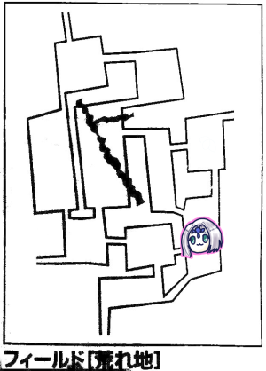
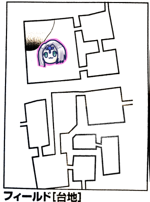

コロナ禍の続く2021年、今年もエターナルのお時間がやってまいりました。
何気に3ヶ月近いブランクがありますので復習していきましょう。
また、flashサポート終了により今回からどどんとふが使えなくなっております。
代わりにコリドーンを使用することになりました。どどんとふに近い使用感で素敵ですね。
・ダンカン商会のクエストは全てクリア。あとは何度でも受けられる配達クエスト有
・マギテック協会はローレンスへの手紙の配達が2回目。3回目でミニストーリーが読める
これに関してはローレンスの息子が出てきたりやたらと意味深なセリフを言っていたりしましたね。
・マギテック協会は更に叡智の水を欲しがってる
・騎士団からは台地の蛮族の砦の攻略を依頼されている。
砦の場所は台地に行ったら場所をGMから教えてもらえるそうです。
でもまずはウルトゥケへリベンジに行くんでしたね。
現在はルキスラにいるのでまず村に戻らないといけません。

ブルーローズ「主は相方に振ってもらいます。これで当たっても私のせいではない」
ナナシ「1です」
GM「残念」
みぞれ「イベント振ります。1です」
ナナシ「あれ…コリドーンでななっしーのHPを弄ってたと思ったら…ピーターのが…変わった…」
「スタンド攻撃を受けている」

GM「君たちが以前守ったオアシスです」
ナナシ「イベント4です」
GM「荒れ地イベントです」
ナナシ「あんなところから岩が！」
GM「岩じゃないですね、なんとこれ初めてのイベントですよ。宿屋とかが見えた瞬間、どしゃぶりの雨が降ってきます。ナナシさんこの雨が何時間続くか1d6で決めてください」
ナナシ「4」
GM「1回の移動が1時間だから4時間で移動4回分続きます。突然の雨！現れる宿屋！なんか資料にホラーって書いてある。探索に-2ペナ、魔物と遭遇したらイニシアチブにペナが入ります」
「ちょうど宿屋あるから雨があがるまで休憩しよう」

ピーター「イベント1です」
GM「何も起きない」
ピーター「いえーい」

タッシュ「イベント4です」
GM「荒地イベントです」
タッシュ「1です」
GM「タッシュ先生好きですね、どしゃぶりの雨パート2です」
タッシュ「まじかよ今まで出なかったじゃん、4時間続きます」
セズウィック村に帰ってきました。
ローレンスに手紙を渡すと、懐かしみほほ笑んだり遠い目をしながら読んでいました。
明日までの返信を書いておくと言われました。
みぞれ「質問があります。オボロンって一度クリアしましたよね、また行けるんですか？」
GM「行けます。最深部には隠しダンジョンよろしく強い武器があったりしますよ。ネタバレするとオボロンの刻印は24-25階層に出てきました。遺跡の最深部は50ぐらいなので、ちょうど半分ぐらいの位置にあったんですね」
行先はウルトゥケです。台地です。

ナナシ「イベント1」
GM「なにも起きない、今日穏やかですね」
ナナシ「探索します。成功」
GM「あ、つばめむぎですよ」
みぞれ「えんばく」
ナナシ「えんばく」
みぞれ「この流れ久しぶりだな」
タッシュ「帰ってきたって感じがする」
GM「吉本みたいですな、あーきたきたこのギャグ」
「北へ移動ってできるんでしたっけ」
GM「一度ルートを発見してるから探索不要ですよ」

GM「みぞれイベントお願いします」
ナナシ「やばい」
ピーター「フラグ立った」
みぞれ「イベント2です、戦闘狂扱いされるの不本意」
GM「湖と飛空船があります」
ピーター「あー船持ってくるの忘れた」
みぞれ「廃都は再度歌う必要がありますか？」
GM「あります」
みぞれ「あとこれ飛行船調べるのにボートが必要なのか、廃都はいらない」
GM「そうです。ボートなくても水泳でもいけますよ？」
みぞれ「無理ゲーだということがわかってます」
ブルーローズ「歌います！バード判定！ウルル～ウルル～ウルルルル～♪(ウルトゥケVer.)」
コリドーンの機能でハートが盛大に舞いました。
GM「遺跡が出現しました。中央へ向かうと深度が上がる形式のダンジョンです」
廃都ウルトゥケ
ナナシ「刻印がダンジョンの半ばぐらいにあるなら、急いで30ぐらいまで行って戻るのどうよ」
「いいすね」
GM「ではスカウトで判定してください。ナナシとみぞれどうぞ」
みぞれ「わたしレンジャーですよ」
「いつも魔香草炊いてくれてるじゃーん」
GM「そうだった」
GM「せっかくだから深度はみんなで振りましょう。最初はナナシからで」
急いで探索して、成功。ピーターが深度を振って深度+10。
廃都ウルトゥケ～深度10
GM「何もありません」
急いで探索成功。
ピーター「深度振ります。7！平均値ですね」
廃都ウルトゥケ～深度17
GM「イベントがありまーす。装飾品が見つかりました。この階層振ったのピーターだからピーターに振ってもらいましょう。1d6で」
ピーター「5です」
GM「腰飾りですバックルみたいな感じです。ウルトゥケの腰飾りです」
「きたーーー」
GM「お値段6000ガメルになります」
ブルーローズ「値札ついてる」
GM「金白Sとしても使えます。ウルトゥケにおいて探索ボーナスが+4つきます」
「+4はでかい」
ナナシ「これナナシが受領しますね」
ピーター「ブレスカと装備部位被らない？？」
ナナシ「その他に付けます」
みぞれ「難易度13が-4されて49？すごいなー一番浅い階層より難易度低くなっちゃったよ」
ピーター「うさちゃんを褒めてくれてもいいんだよー」
「よーしよしよしよし」
「もふもふもふもふ」
急いで探索、成功。
タッシュ「深度振ります。8」
廃都ウルトゥケ～深度25
みぞれ「これ前回金貨があったところだ」
GM「これ複数回発生するのかな？…しますね、但し見識判定がいります」
ピーター「成功です」
舞うハート。便利だなこの機能。
GM「金貨1d6です」
タッシュ「6！」
舞うハート。
急いで探索して成功、ブルーローズが深度を振って深度+4。
廃都ウルトゥケ～深度29
GM「装飾品の発見パート2です。ブルーローズさん種類を決めてください」
ブルーローズ「1です」
GM「ウルトゥケの腕輪です、探索判定に+1されます」
ナナシ「名産品めっちゃ落ちてるやん」
ブルーローズ「6って何が出るんだろう」
「テーブル」
「ウルトゥケのテーブル…？」
ナナシ「腕ははまってるんでこれは付けずに30まで行こう」
みぞれ「今29だから30じゃないの？」
GM「あ…エラッタを発見してしまった、深度19が表にない」
「なんですと」
GM「17-18の次が20-21になってる。仕方ないので19になったら何もなしってことにします」
普通に探索して成功、みぞれが深度を振って深度+2。
廃都ウルトゥケ～深度31
GM「金貨を発見しました」
ピーター「セージ技能で判定しまーす。成功」
GM「じゃ何枚手に入れたかをみぞれお願いします」
みぞれ「4枚です」
普通に探索して成功、深度+5
廃都ウルトゥケ～深度36
みぞれ「あーここ魔物だー」
GM「既に遭遇したことあるので言っちゃいます。テラービーストとティキラとラグナカング」
「テラービースト以外は遭遇した覚えがないです」
GM「忘れてください」
結局弱点も全部抜きました。
ピーター「バルバロステイルズ持ってないので弱点だけ教えてください
GM「テラービーストが純エネルギー、ティキラが物理、ラグナカングが衝撃です」
ナナシ＆みぞれ「斬撃じゃね？」
GM「え？最後のページの版数教えて」
みぞれ「16です」
タッシュ「バルバロステイルズってそんな売れてんの」
GM「買い直そうかなー」
タッシュ「これ全員魔法使ってくるよどうすんの」
ナナシ「焼き払う」
ブルーローズ「それで先制取られるんでしょ」
ピーター「フラグか？立てて遊ぶの好きだよねみんな」
GM「ちなみにルールブックにはこのモンスターを出せと書いてあります」
「じゃ行き過ぎた？」
「まさか正解の深度は20-21？いや34-35という可能性もあるな」
GM「ごめん、とても時間を無駄にした。別の遺跡のモンスターを召喚してしまった。ビッグアーチャー×3とインシルペルスです。振り直しなしで弱点抜いたままでいいです」
GM「では改めまして。敵と味方の間は5mっと」
みぞれ「あれ？味方と敵の間は10mじゃなかったっけ？でなきゃ初手後衛にグレネード打ち込むよ私」
GM「そうだった。そして本には前衛に全部配置しろって書いてある」
みぞれ「やったー」
ナナシ「先制振りまーす」
GM「みぞれランチャー、ピーター焼き払い、タッシュ焼き払い？」
「そんな感じで」
みぞれ「グレネード16です」
GM「インシルペルスは抵抗しました。ビッグアーチャーはおつむてんてんだから抵抗できないだろうなー。はい全員ダメ」
みぞれ「ダメージ12です。出目1、2が出ました、悲しいです…」
GM「あ、インシルペルスは頭部にかけら入ってるの言うの忘れてました」
みぞれ「は？？？？？」
GM「あとかけら5あるから魔法抵抗1上がってるね」
みぞれ「初めて知った」
ピーター「ファイアストームいきまーす。25！くりてぃかーる！」
GM「抵抗できるかーい！2dだけ振るよー6ゾロでなきゃ失敗。はい全員失敗」
画面上に舞うハート。
GM「何これ煽られてるの？」
ピーター「K40いきまーす。20点ダメージ」
タッシュ「K40はすごいな」
タッシュ「じゃ弱めの炎で。ふぁいあーぼーどごーん。あ20出た」
GM「またビッグアーチャークリティカルのみだな。全員失敗」
タッシュ「あ回った。20点ダメージ」
みぞれ「ビッグアーチャー飛んだ」
GM「え残ってるよ」
ナナシ「え消し炭だよ？」
GM「ファイアストームのダメージ入れてなかった、消えました」
ナナシ「じゃインシルの胴体を俺が殴ってー」
みぞれ「頭をブルーローズに潰してもらうと」
ナナシ「じゃあデビルフィンガー入れてウィップで挑発攻撃いっとくか。ここで倒せることを信じて。17」
GM「15」
ナナシ「1回転した、22点ダメージ」
GM「胴体潰れた。まだファストアクション残ってるんだよね？」
ナナシ「はい。頭に21」
GM「16、ダメだー」
ナナシ「16点ダメージどうぞ」
みぞれ「ブルーローズ！トドメよ！」
GM「応援が入った」
ナナシ「キャッツアイ入れてー」
ブルーローズ「マッスルベアとかは？」
ナナシ「マッスルベアは大丈夫、当たれば…これ異貌化していい？」
ブルーローズ「いいよ、誰もいないし」
みぞれ「木綿のハンカチーフ君どうしたんだっけ」
GM「忘れてた、村に落としたってことで」
ブルーローズ「22」
GM「19」
ブルーローズ「28点ダメージ、追加攻撃！20」
GM「16」
ブルーローズ「27点！撃破！」
ナナシ「進むのって自由行動だっけ」
GM「別です」
ブルーローズ「ブルーローズは手空くかな？」
みぞれ「敵4匹だったから剥ぎ取りで一人空くね」
ブルーローズ「じゃびびびーですね」
戻って深度34-35をスナイプすることにしました。
戻るが成功して1d6で2戻ることに。スナイプ成功です。
廃都ウルトゥケ～深度34
GM「部屋ですね。ピーターさん部屋の内容決めてもらえますか？1d6で」
ピーター「1」
GM「何もない部屋です」
ナナシ「進むかー」
ブルーローズ「これ部屋表で6出さないといけないとかはないですか」
GM「ないです、イベントは固定です」
普通に探索して成功、深度+1。
廃都ウルトゥケ～深度35
GM「深度34-35は同じ部屋になりますね」
タッシュ「部屋の内容は4です」
GM「魔物がいて襲い掛かってくる！1d6どうぞ」
タッシュ「3」
GM「アンデッドの部屋でしたー。レッサーマミーがいまーす」
ピーター「単体？」
GM「単体！」
ピーター「魔物知識判定します。弱点抜きました」
GM「お知らせがあります。よく話題になるモンスターとの距離なんですが、ごっちゃにしてました。ダンジョンが5m、フィールドが10mでした。
「なるほど」
みぞれ「どのみち今回私はチアで」
ナナシ「前衛がパンチする感じですかね」
ナナシ「ナナシからいきます。前に出まして…あっ先制判定」
GM「してください」
ナナシ「取りました。大変失礼しました。ウィップで挑発攻撃、18」
GM「14」
ナナシ「えっと、絡みとダメージどっちが先だっけ」
GM「どっちでもいいんじゃないかな」
ナナシ「じゃ絡み決めます。2…武器や盾。徒手空拳だよねマミー」
GM「腕かな」
ナナシ「14点ダメージ。サーベルで攻撃します。」
GM「二刀流おっけーなんだっけ」
ナナシ「二刀流っていうか空いた手で攻撃おっけーっていう。19」
GM「13」
ナナシ「はい。自動失敗です」
ブルーローズ「魔力撃トンファーで殴ります。そーれ19」
GM「ほーれ13、回避できない」
ブルーローズ「異貌化しっぱなしなので…30点ダメージ」
GM「ぼてくりまわされた」
ブルーローズ「わんもあ。20」
GM「14」
ブルーローズ「30点ダメージ」
GM「また30。はいどーん。レッサーマミー撃破でーす」
普通に進む。成功。深度+3。
廃都ウルトゥケ～深度38
GM「ウルトゥケ独自のイベントが起きまーす」
ナナシ「ウルトゥケー！」
GM「氷の湖です。氷の下には人々の亡骸が横たわっています。少女が一人眠っており、その亡骸の植えには黄金のオカリナが置かれています。冷たい風がびゅうと吹き付けると、美しい鎧をまとった美少女が現れます。その後ろに4人の真っ白な髪の女性を従えています。ピーターは一目見て分かるんですがこれ妖精です」
ナナシ「やっほー」
ピーター「やっほー」
GM「LV9モンスターフラウとLV15レベルモンスタースカディです。スカディはかけらが入ってます」
ピーター「ふぇっ」
GM「スカディは魔法文明語で話しかけてきます。誰か分かります？」
ナナシ「タッシュ先生」
タッシュ「分かるはず」
GM「ではタッシュ先生。ここはウルトゥケの聖なる墓所だ。君はウルトゥケに縁のある者か？」
ピーター「手の甲の刻印を見せます」
GM「それはオボロンの紋章か。なるほど、では私の敵ではないな。我が同盟を結んだ都市に縁のある者か」
タッシュ「エターナル探してるとか言えばいいのかな」
みぞれ「スタンプください」
GM「その刻印はこの墓所にはない」
ブルーローズ「ここに眠っている方たちは一体…」
GM「ここはウルトゥケの人々の墓所だ。かつてウルトゥケはエッダに滅ぼされた」
「おっとお」
GM「ここでエッダの刻印を見せようものなら大変なことに」
ウルトゥケは風来神ル=ロウドを保護していた。しかしエッダは認めていなかったため敵対心を抱いていた。エターナルが時の彼方へ旅立った後にエッダの抑えがなくなり、エッダは正義の鉄槌を下しウルトゥケは滅んだ。しかしこの少女だけが生き残った。一人オカリナを吹き続けたが病で力尽きた。少女は鎮魂の曲を吹いていたが、少女自身を鎮魂する者がいない。どうか鎮魂の曲を奏でてはもらえないだろうか。
GM「ということです。吹きますか？」
ナナシ「ちんこーん」
ブルーローズ「黙って？裏拳で魔力撃叩きこむよ？…吹きます。この墓所に眠るウルトゥケの民たちそして少女のために。お願いしますナナシさん(代理)」
ナナシ「11」
ピーター「いちたりない」
ブルーローズ「器用の指輪を割って補填できるかな」
ナナシ「装備してないから割れないねー」
ピーター「施設で振り直しなかったっけ」
「演奏はさすがに振り直しないなー」
ナナシ「ここに滞在したらやり直しできるのかな」
GM「とりあえずやっていきましょう。げろを吐くような顔をしてブルーローズを見ました。ど、努力は認めよう、そんな演奏では少女も浮かばれない。うまく吹けるようになったらまたお願いしよう」
ブルーローズ「プリーストとしてもバードとしても屈辱ですわね」
GM「これで10回目の探索になりますが、ここで『動かない』が選べます」
ブルーローズ「もう一回！もう一回私にチャンスを！」
GM「では38でステイします」
廃都ウルトゥケ～深度38(2回目)
スカディ「では少女のために鎮魂歌を吹いてやってくれ。パート2」
ブルーローズ「まず器用の指輪をつけて、器用の腕輪をナナシからもらって、かつプリーストのブレスっていう器用度ボーナス+1を自分にかけたいと思います」
「用意周到だー」
ブルーローズ「私はバードLV3である以前にプリーストLV7なのですわと誇らしげに」
GM「いいねぇプリーストっぽい、いやプリーストだけど」
ブルーローズ「ブレスかかりました」
GM「ではブルーローズさん、修正マシマシの鎮魂の歌をどうぞ」
ブルーローズ「いくわよー！12」
ナナシ「代わりに振ります。バード判定！チ～ンチ～ンコ～ンコ～ン」
鎮魂に成功し、オカリナを手に入れました。
スカディ「少女の代わりにこのオカリナを連れて行って欲しい」
ブルーローズ「分かったわ、あなたの夢は私が引き継ぐわ」
GM「ウルトゥケのオカリナです。一応8000ガメルで売れます」
ブルーローズ「は、8000ガメル…いえいえ、これは少女の夢よ」
GM「四葉のクローバーの意匠が施されているかわいいオカリナです。ウルトゥケの廃都にかけられた守りの魔法を解くことができます。延長したい場合は5点のMPで1時間延長できます。1探索に1回だけ、6時間まで延長できます」
みぞれ「刻印…」
ピーター「時間追加するかー、ブルーローズMPどれぐらい残ってる？」
GM「6時間追加コース？」
みぞれ「ブルーローズのMP大丈夫なの」
ナナシ「ブルーローズのMPはあってないようなものだから。この先戦闘で泥仕合する可能性もあるし4時間ぐらいでいいんじゃね」
ブルーローズ「いいよつぎ込んでも」
ナナシ「MPの持ち主がそう言ってるならいいかー」
というわけで6時間延長しました。
急いで戻ることになり、判定成功。深度-5。
廃都ウルトゥケ～深度33
GM「危険感知判定してください」
みぞれ「ここって前にも来た事あるけどその時の知識って使えないんですか」
GM「使えません」
失敗しました。
GM「すさまじい量の電流が流れる！魔法ダメージ15点受けてください」
ブルーローズ「10万ボルト」
GM「ウルトゥケ10万ぼると！」
ウィスパーヒールをかけてもらい、急いで戻ります。成功、深度-6。
廃都ウルトゥケ～深度27
GM「魔物です。3体います。イカれたメンバーを紹介するぜ！黄色い縞の動物」
みぞれ「タイガー？てかこれ固定？遭ってるよね」
GM「遭ってるっけ？」
みぞれ「前回のウルトゥケで遭ってる。構成タイガータイガーマンドレイクですか？」
GM「そう。じゃ遭ってるね」
ピーター「マンドレイク魔物知識判定ファンブルしました、タイガーは抜きました」
ナナシ「あぶな、先制15」
GM「14です」
みぞれ「(前回の記録を見ながら)ん？なんでタイガー片方こんなHP…かけら入ってます？」
GM「はい、片方に入ってます」
タッシュ「ファイアーボール撃ったよ、ミュートしてたわ、19」
GM「全員くらった」
タッシュ「燃やす！18点ダメージ」
みぞれ「グレネード打ちます、18」
GM「かけら入りクリった、もう片方は失敗」
みぞれ「そっちクリらないで、16点ダメ」
ピーター「弱火であぶろうかな。ファイアブラスト19」
GM「かけらアリ抵抗した！かけらアリ頑張ってる！」
ピーター「16点ダメージ」
ナナシ「ブルーローズタイガー落としますか」
ブルーローズ「落としますか。前進」
GM「先言っておきますがマンドレイク首絞めるの無理ですよ植物なんで」
ナナシ「絡みデバフはあるよね」
GM「あります」
ナナシ「じゃブルーローズを前に出して、トンファー魔力撃で受け止めてみよ我が拳、はい23」
GM「たっけーなおい」
タッシュ「やる気満々」
GM「19、いい値なんだけどねー」
ブルーローズ「29点ダメージ」
GM「追撃来るんでしょ、どうぞ」
ブルーローズ「22」
GM「15」
ブルーローズ「23点で撃破ー」
ナナシ「マンドレイクをウィップで挑発攻撃、23」
GM「11、はい」
ナナシ「15点ダメージ」
GM「ここで悲鳴が来るんだ、これ30mだから全員範囲内だね、生命抵抗力判定10全員くらってください」
タッシュ「成功。タッシュが成功するなら大体成功するでしょ」
GM「10だからねー」
みぞれ「固定値だからね」
ナナシ「じゃ続いて胴体をめがけてどーん。16」
GM「14」
ナナシ「13点ダメージ」
GM「かっこよくカオスショットを撃ちます。ナナシ目標。11」
ナナシ「20」
GM「11点、半減6点です」
みぞれ「はいおつかれー」
GM「何がお疲れだまだマンドレイクは立っているぞ」
ブルーローズ「トンファー魔力撃で22」
GM「14」
ブルーローズ「28点撃破！」
急いで戻る。深度-4。
廃都ウルトゥケ～深度23
GM「1d6振ってください」
みぞれ「4です」
GM「魔物です。1d6」
みぞれ「6…うっ」
GM「魔神ですね。マジンゴー！ギルドレックです」
弱点抜きました、先制も取得。
ナナシ「ナナシから行こうかな。前進してウィップで挑発攻撃。21」
GM「19」
ナナシ「お、1回転。22点です」
GM「胴体に絡みました」
ナナシ「サーベルで攻撃します。どん、18」
GM「胴体ペナくらって14、失敗」
ナナシ「お回転したすげぇ、18点」
ナナシ「ブルーローズを前に出して、魔力撃トンファーで。16」
GM「13」
ナナシ「28点ダメージ」
GM「終わった」
ナナシ「ギルドレック剥ぎ取ります。なめらかな尻尾初だな(8以上)」
みぞれ「結構相手にしてるはずなんだけどねギルドレック」
GM「出たことなかったんだね」
戻る。深度-5。
みぞれ「だー戻りすぎ。多分この分だと22-23が正解なんですよね」
ナナシ「ウルトゥケ始まったな」
廃都ウルトゥケ～深度18
GM「装飾品を発見しました」
ピーター「いえーい。3！新しいものが出てくる予感」
GM「ウルトゥケのピアス。シリーズ集まってきたな。探索+2、1500ガメルです」
みぞれ「全部固めたら特殊効果発動しますかね」
ブルーローズ「とりあえずビビッド歌います」
ナナシ「とりビビ」
普通に進みます。
ナナシ「これ6出すんでしょ」
タッシュ「6です…」
フラグ回収。
廃都ウルトゥケ～深度24
GM「金貨を発見しました」
タッシュ「金貨ざくざくや」
ピーター「見識判定成功しました」
タッシュ「5枚見つけました」
ナナシ「金貨15枚になった」
戻るを選択。ファンブル。
時間を1回無駄にしました。
戻るを選択。
みぞれ「3か4！3か4をお願いします！」
ブルーローズ「4です！」
ナナシ「リーダー！」
みぞれ「さすがリーダー」
廃都ウルトゥケ～深度20
GM「いい読みです！ウルトゥケ特殊イベントです！深い森の中、比較的原型をとどめている小さな家があります」
みぞれ「街中じゃなかったんだここ」
GM「そうなんだけどところどころに木々が生い茂ってる感じです」
ナナシ「うちの実家みたいだな。とりあえずノックします」
GM「近づこうとすると扉がばたんと空いて人影が飛び出してきます」
「ヒトカゲ」
GM「火トカゲは飛び出してきません。ピーターはわかります。妖精です」
ピーター「やっほー」
GM「シェイドです。2体でてきます。錯乱しています。返せ！みんなを返せ！と言っています」
ナナシ「これあのブルーローズの、サニティ」
ブルーローズ「サニティうちたいなー」
GM「この魔物が何故錯乱しているのか知る必要があります。魔物知識判定どうぞ」
ピーター「成功」
GM「穢れの影響で狂っています。穢れがたまっているんですね。穢れがたまった妖精は倒すことでしか解消できないんですね。で、2体いるうちの1体にカケラが入っています。残念ながら戦闘になります」
ナナシ「先制判定します。うん、これは抜いているように見えてファンブル。櫓使っていいすか」
「や・ぐ・ら！や・ぐ・ら！」
ナナシ「ヤグラカタブラ！成功」
みぞれ「適当に殴ってもらって残飯処理必要があったら参加します」
ナナシ「ブルーローズ先発させるか。トンファー魔力撃をかけら入ってる方に。17」
GM「14」
ブルーローズ「哀れな魂に救済を！」
ナナシ「魔力撃！自動失敗」
ブルーローズ「ほあー」
ナナシ「なんの、2撃目！18」
GM「16」
ナナシ「回った、35点ダメージ」
タッシュ「これ前行って殴った方がいいのかな」
みぞれ「久々の」
タッシュ「ななしーさんどうするの」
ナナシ「ソリバレ一発撃ってもらって様子見ようかなと思ってました」
みぞれ「じゃソリバレ撃つわ。16」
GM「14」
みぞれ「15点ダメージです」
タッシュ「1匹残りそうだからカンタマかけるか」
ナナシ「いらないんじゃない」
タッシュ「かけちゃった」
ピーター「ファイアボルトでいいかな。2倍がけでー24」
GM「両方ダメでーす」
ピーター「18点ダメージ」
GM「かけら入った方が瀕死です」
みぞれ「ななっしー生きてる？ミュートになってる？」
ナナシ「あごめんなさい独り言喋ってた、MP減らしてるのでーウィップ挑発攻撃、クリティカル」
GM「無理」
ナナシ「16点」
GM「かけら入り逝きました」
「逝ったって昇天」
GM「天国へ行きました」
ナナシ「残りの妖精の首を狙ってー」
GM「妖精は魔法のかたまりなので首絞めは無効です」
ナナシ「なんだとー、じゃ胴体狙いで、ウィップ挑発攻撃、23」
GM「17」
ナナシ「15点ダメージ」
GM「シェイド、心の闇を使います」
「鬱だ死のう」
GM「15で抵抗してください」
全員成功。
ナナシ「デバフかけるために殴るか。あれ絡みっぱなしだったか、じゃブルーローズに殴らせよう。魔力撃いきまっせー19」
GM「12」
ナナシ「回った、35点」
GM「しんだわ」
ナナシ「ドロップ品ないのか」
GM「かけらがあるよ」
ピーター「私が回収しまーす」
GM「シェイドを倒してかけらをピーターが手に入れたところで、周囲の暗闇からシェイドが次々と現れる。200体ぐらい」
タッシュ「まじ」
ナナシ「ゲームオーバーじゃんこれ」
ピーター「やっほー」
GM「仲間を自然に戻してくれてありがとう。これで生まれ直すことができる。ウルトゥケの人たちと仲良くしていたけど(この後メモしきれなかったけどエッダの影響で)仲間がおかしくなってしまったんだ。でもこれで僕たちも精霊界に帰れるよ」
ブルーローズ「ビビッドを歌いたいところだけどここはさっきのオカリナで彼らのための曲を吹きたいね」
GM「ではバード技能でどうぞ」
ブルーローズ「おくるーことばー」
タッシュ「ええ…」
GM「そうするとシェイドが光の粒子になって深い森の奥へ消えていきます」
ブルーローズ「ウルトゥケのみんなと同じところに」
GM「小さな家があるって言ったけど、その中から光が漏れてきた」
「調べるしか」
GM「みんなで入ってみると五つの目を持つ紋章が床で光っています。これは隠されていたけど光を放つことによって見えるようになっています。縦横2mぐらいずつある大きな文様です」
タッシュ「これがウルトゥケの紋章？」
みぞれ「これは見識判定か何か？」
GM「見識判定してもいいかなー」
ピーター「はーい、16」
GM「これはピーターの知識にないです。知識が足りないのかそもそも文献にないのかわかりません。これは近づくと力を発揮するものだということはわかります」
ナナシ「とりあえず入りましょう」
GM「ナナシが入ると頭の中に言葉が響きます。ナナシなに喋れる？」
ナナシ「共通語とシャドウ語」
GM「いろんな言葉で語りかけてきます。やがて共通語で「刻印を望みますか？」と言葉が聞こえます」
ナナシ「望みます」
GM「左手の甲に痛みが走り、五つの目の紋章が描かれます。これがウルトゥケの刻印です。全員得ますか？」
「得まーす」
GM「君たちはウルトゥケの紋章を手に入れた！いい読みだったねー」
タッシュ「やっと2つ目…」
ナナシ「エッダ滅ぼすべし」
GM「で、探索あと7回分残ってます」
「奥まで行く？」
「レベルアップしたいから村に戻ろう、経験値とかめっちゃたまってたはず」
GM「戻ると思うと紋章を持ってる人たちは全員戻ります」
タッシュ「持ってないと残されるってこと…？怖」
GM「全員が刻印を得るってことになってるからね、ルルブの記述がそう読めるのよ」
GM「ダンジョンから出ました！おめでとうございます！ではイベント振ってください。ブルーローズ」
ブルーローズ「1」
GM「1回だけ食糧減らして村に戻りましょうか」
一度南に移動してフィールド移動しました。
村に戻り、ローレンスに報告。
1500ガメル入手。
今までの溜まりまくった経験値の処理をします。
GM「★が23個だから200×23」
みぞれ「4600」
「いやそんな多いわけない」
タッシュ「…？いや、4600だわ、合ってるわ」
GM「モンスターの計算で気が狂いそうになってる」
ナナシ「かけらは44個です」
「44個ｗｗｗｗｗ」
44d6を振って名声値155点を得ました。
本日はここで終了！